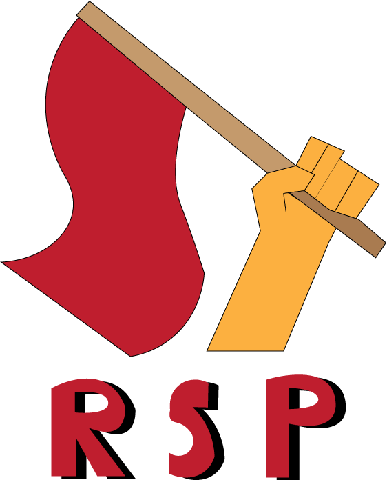

Party flag

The Revolutionary Students Party flag is a red banner (preferably a 3:2 ratio) with a yellow sickle and hammer in the center. The design is almost identical to the flag of the Communist Party of Vietnam. This flag serves as the current de facto flag of the Revolutionary Students party, as the official flag is to be determined via a election that will be held soon once ideas are submitted. This flag alongside plain red flags are used during public appearances of the party, potests, marches, and in public agitation in regards to the party and its related events and symbolism. The flag is also used as a general way of denoting the party either online or in other forms. Show your pride for the party by waving this flag!
Official emblem
The official emblem of the Revolutionary Students' Party is a hand firmly grasping a waving red flag. This emblem is used on official documents, posters, pamphlets, websites, and other forms of media to denote the Party. Bold letters spelling "RSP" are somtimes alongside the hand and flag as a part of the emblem.
The secondary emblem of the Party is a hammer and sickle. The hammer represents industrial workers and the sickle represents farmers. The hammer and sickle originated as a Soviet made icon, but has since been used by parties and activists all around the globe. The most common varient of the party emblem being a red sickle and hammer for the convenience of eligibility of the emblem against white backgrounds. There also exists a yellow varient that is less commonly used and only present on red or differnt colored backgrounds in special cases (such as the party flag).
Misc.
There is info at the bottom of the home page with info on how to submit a design for the party flag elections. Please email tomkelpfish@gmail.com with questions or submisisons.
Department of media and propaganda of the Revolutionary Students' Party.
written by Isaac Harper 3/31/2024